Teaching Point:
Today we will review what makes an animal a Reptile.
What Makes an Animal a Reptile?
Another type of animal that we know about is a Reptile. It's very easy to tell reptiles and mammals apart. The two types of animals look and act VERY different. How do we know if an animal is a Reptile?
- Reptiles are cold-blooded. That means their body temperature changes with the outside temperature.
- Their skin is hard and scaley. This helps protect them.
- They have four legsn - except for snakes.
- Reptiles come out of eggs. When they are born, they don't need to be with their parents. They know how to survive on their own from when they are very young.
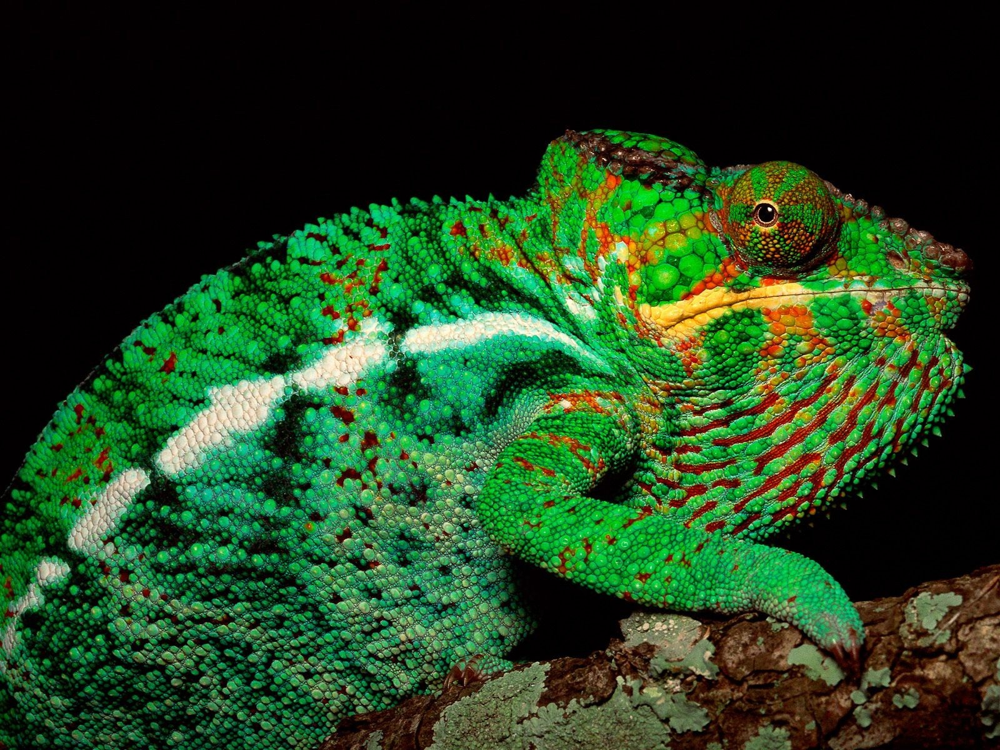
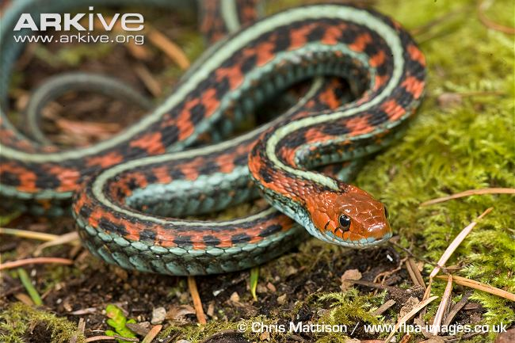
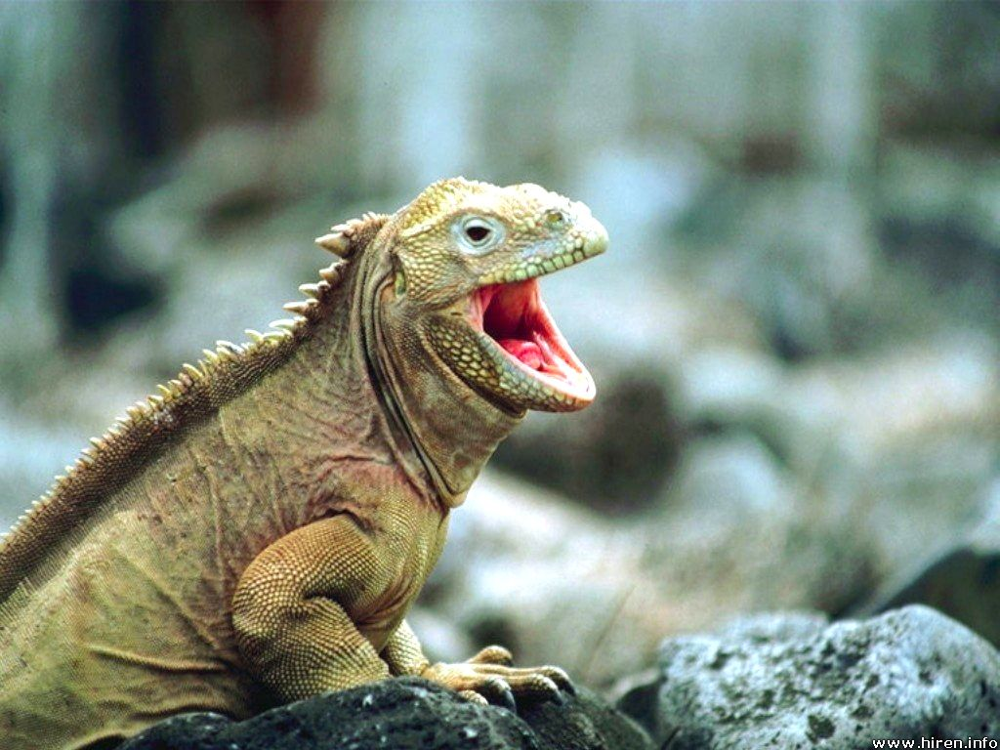
 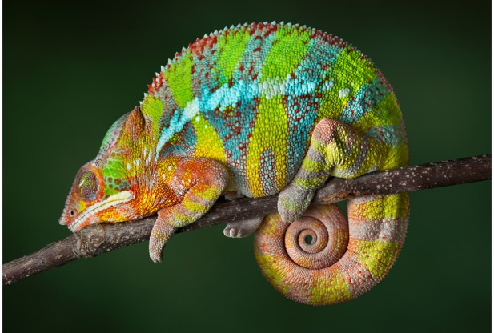
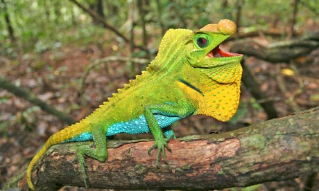
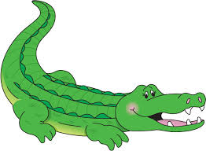
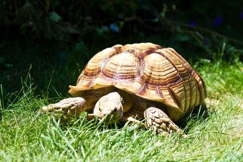
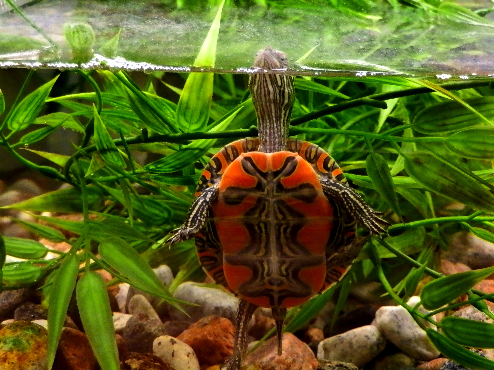
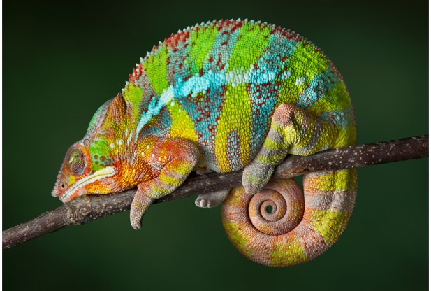
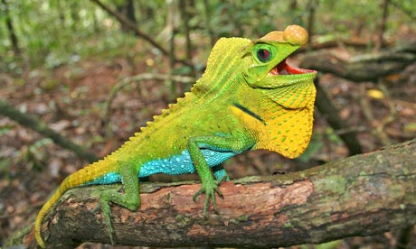
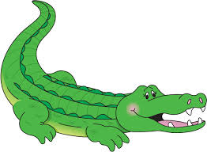
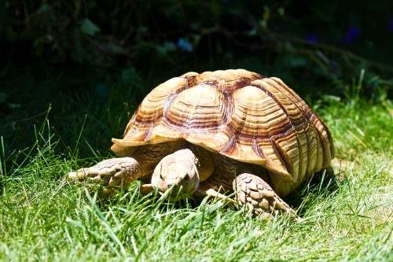
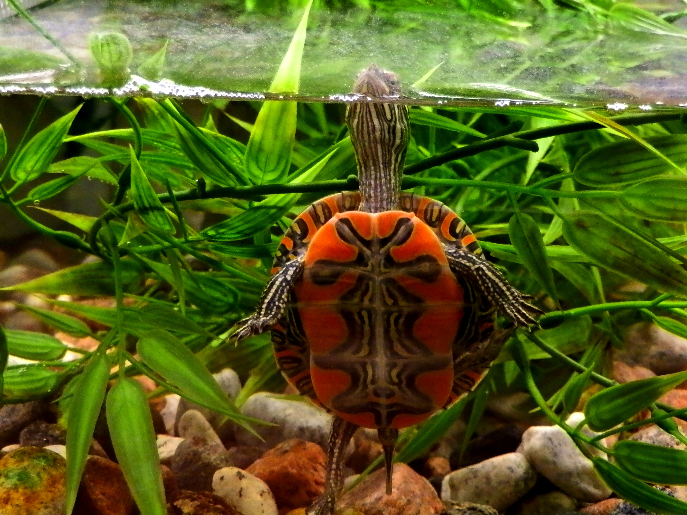
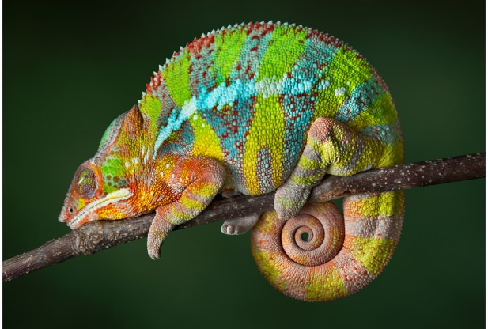
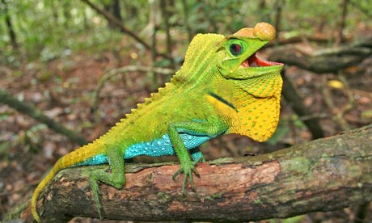
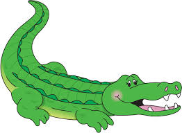
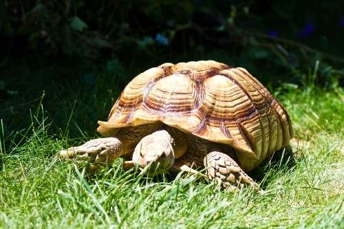
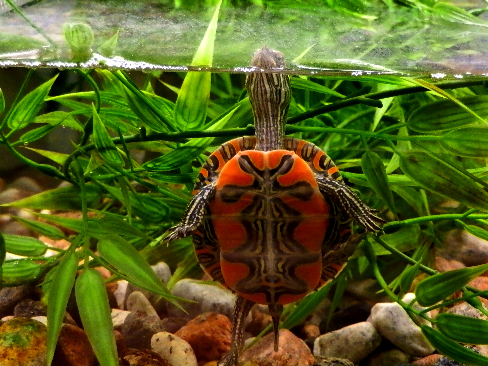
Today's Assignment
Make a Reptiles poster in Kid Pix using stamps from the Nature Menu. Use the T-Tool to write 1 or 2 things that you know about Reptiles.
Back to School Portal